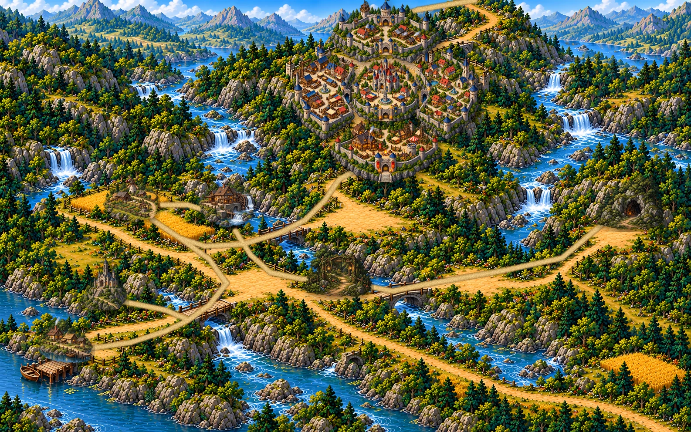

Мапа світу

Наведіть на місце на мапі, щоб побачити опис. Клік — обрати, подвійний клік — перейти. Місто можна обрати по районах.

Наведіть на місце на мапі, щоб побачити опис. Клік — обрати, подвійний клік — перейти. Місто можна обрати по районах.